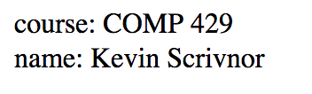

cihttpver 2019.spring.1.0
Changes
| Date | ver. | Description |
|---|---|---|
| Feb 13 | 1.0 | Initial release. |
The goal is to create a simple HTTP server called cihttp. HTTP is an application layer protocol on top of TCP/IP, so we need not worry about transporting the packets, handling fragmentation, switching packets, etc. We will see how data is encapsulated at this layer using the service/peer interfaces provided by HTTP.
We will not fully implement HTTP. We will implement three request types: GET, POST, and HEAD.
| Milestone | Date |
|---|---|
| Milestone 1 | Mon Feb 18 |
| Milestone 2 | Mon Feb 25 |
| Milestone 3 | Wed Feb 27 |
| Milestone 4 | Mon Mar 4 |
git used properly
Each milestone will be judged by correctness and readability.
sudo firewall-cmd --zone=public --add-port=9001/tcp --permanentsudo firewall-cmd --reloadhttp://192.168.56.101:9001/hello.htmlAlso Postman is a very helpful tool for debugging when working on projects like this.
.h file.strtok() is totally allowed in this class!Only returns the header as if a normal GET request, BUT absolutely no body should be attached.
www folder for the files.form.html (after you have implemented GET)post_test.post_data NVL structure of the request.hello.html, fancy_hello.html, and form.html pages successfully.fancy_hello.html (server side output)HTTP 1.1 GET Request:
Request-URI: /fancy_hello.html
Headers:
Cache-Control: max-age=0
If-Modified-Since: Wed, 19 Sep 2018 04:09:58 GMT
Upgrade-Insecure-Requests: 1
Connection: keep-alive
Accept-Encoding: gzip, deflate
Accept-Language: en-US,en;q=0.5
Accept: text/html,application/xhtml+xml,application/xml;q=0.9,*/*;q=0.8
User-Agent: Mozilla/5.0 (Macintosh; Intel Mac OS X 10.12; rv:62.0) Gecko/20100101 Firefox/62.0
Host: localhost:9001
server: got a connection from 127.0.0.1
HTTP 1.1 GET Request:
Request-URI: /style.css
Headers:
Cache-Control: max-age=0
If-Modified-Since: Wed, 19 Sep 2018 04:10:21 GMT
Connection: keep-alive
Referer: http://localhost:9001/fancy_hello.html
Accept-Encoding: gzip, deflate
Accept-Language: en-US,en;q=0.5
Accept: text/css,*/*;q=0.1
User-Agent: Mozilla/5.0 (Macintosh; Intel Mac OS X 10.12; rv:62.0) Gecko/20100101 Firefox/62.0
Host: localhost:9001fancy_hello.html (client side output)Note the response headers, status code, the fact that it loaded two pages, and the style of the page. This is the network view from Firefox's inspector.
In the event a page is requested that is not in the www folder, a 404 status should be sent, along with a simple hardcoded webpage that says "File not found" You're welcome to make a fancy page if you'd like.
Loading the form.html page:
After submitting the form:

Server side output:
server: got a connection from 127.0.0.1
HTTP 1.1 GET Request:
Request-URI: /form.html
Headers:
Cache-Control: max-age=0
If-Modified-Since: Wed, 19 Sep 2018 21:14:59 GMT
Upgrade-Insecure-Requests: 1
Connection: keep-alive
Accept-Encoding: gzip, deflate
Accept-Language: en-US,en;q=0.5
Accept: text/html,application/xhtml+xml,application/xml;q=0.9,*/*;q=0.8
User-Agent: Mozilla/5.0 (Macintosh; Intel Mac OS X 10.12; rv:62.0) Gecko/20100101 Firefox/62.0
Host: localhost:9001
server: got a connection from 127.0.0.1
HTTP 1.1 POST Request:
Request-URI: /post_test
Headers:
Upgrade-Insecure-Requests: 1
Connection: keep-alive
Content-Length: 35
Content-Type: application/x-www-form-urlencoded
Referer: http://localhost:9001/form.html
Accept-Encoding: gzip, deflate
Accept-Language: en-US,en;q=0.5
Accept: text/html,application/xhtml+xml,application/xml;q=0.9,*/*;q=0.8
User-Agent: Mozilla/5.0 (Macintosh; Intel Mac OS X 10.12; rv:62.0) Gecko/20100101 Firefox/62.0
Host: localhost:9001
name=Kevin+Scrivnor&course=COMP+429Note that the data is URL encoded, please convert the +'s to spaces!